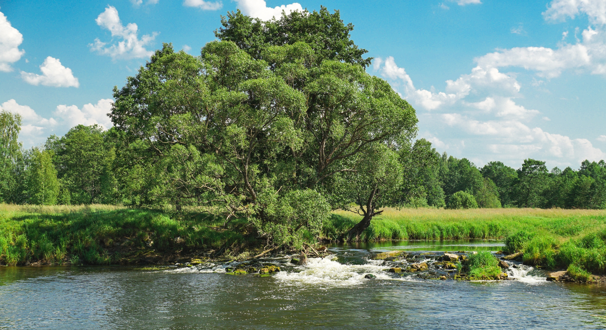

Лаврово
География
Деревня Лаврово расположена в 3 км к северу от райцентра города Судогды и является центром лавровского сельского поселения. К востоку от деревни протекает река Судогда.
История
Есть упоминание о деревне в Государственном архиве Древних актов в 1628г., где имеются сведения о пожаловании деревни Лаврово в вотчину-владение дьяку Ивану Грязнову.
Происхождение названия
Название деревни - антропоним, происходит от первого владельца здешних земель - помещицы Лавровой.
Вернуться на карту

Река Судогда недалеко от Лаврово